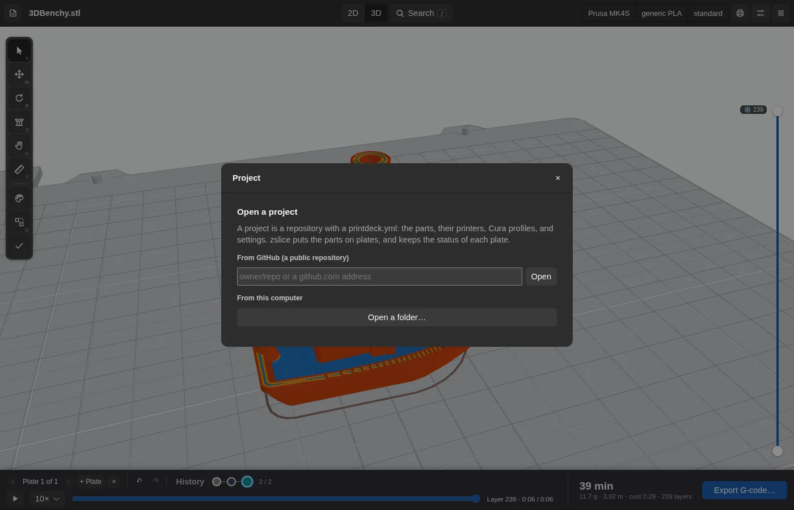

Features
16printdeck projects
Open a repository of parts from GitHub. zslice puts the parts on plates, each with its printer, profile, and material.

A project is a repository with a printdeck.yml file at its root. The file lists the parts to print. printdeck uses the same file for its builds from GitHub.
Open a project
- In the web app or the Windows app, pick Open a project… in the main menu.
- Type
owner/repo, or the address of a repository on github.com, and click Open. An address with/tree/<branch>opens that branch. The repository must be public. - Or click Open a folder…, and pick the folder of the repository on your computer.
The dialog shows the parts and the plates of the project. The app reads only the files that a plate needs, when you open the plate.
Pick the parts
- Each part has a check box and a count. Clear the box to leave the part out.
- The parts with the same printer, profile, material, and plate settings share a plate.
- A part with
alone: truegets a plate of its own. - A part with variants (for example fine and fast) is one part for each variant. Only the first variant is on at the start.
Print a plate
- Click Open on a plate. zslice loads all plates of the project, each with its own profiles, and slices them. The plate that you clicked becomes the active plate. Then Show goes to a plate.
- Export the G-code, or send it. If one of your printers has the name of the printer of the plate (for example
taz), zslice picks it. - Set the status of the plate: To print, Printing, Printed, or Failed. A send from the plate sets Printing.
The machine settings of the plate come from the project. They do not change the profile of your printer. A plate with no Cura stack is a resin plate: zslice does not slice resin yet.
The project and the status of its plates stay after a reload. The web app keeps them in your browser. Open a folder again after a reload. Close closes the project. Its plates stay in the view, and their print status goes.
printdeck.yml
project: robot
parts:
- name: Feet
group: Legs
files: [models/foot.stl]
count: 4
printer: taz
profile: taz-workhorse-se/pla-0.20-standard # profiles/<folder>/ and a profile of its cura.json
material: roll-4 # a material of that cura.json
settings: {support_enable: false, adhesion_type: brim, brim_line_count: 10}
- name: Tower
files: [models/tower.stl]
printer: taz
profile: taz-workhorse-se/pla-0.20-standard
material: roll-4
alone: true
variants:
- name: fine
profile: taz-workhorse-se/pla-0.10-fine
- name: fast
settings: {infill_sparse_density: 10}The settings use the names of Cura. A setting that zslice cannot use stops the load of the plate, with the reason.
Privacy
To open a GitHub project, the app reads the repository from api.github.com and raw.githubusercontent.com (and media.githubusercontent.com for a file in Git LFS). It sends no login and no data of yours. See Privacy.